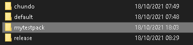
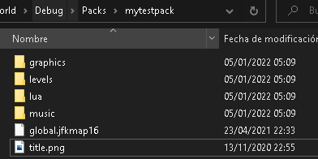
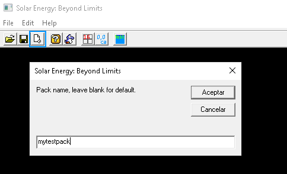
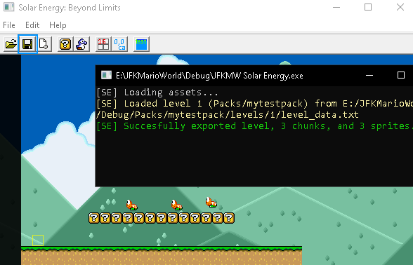
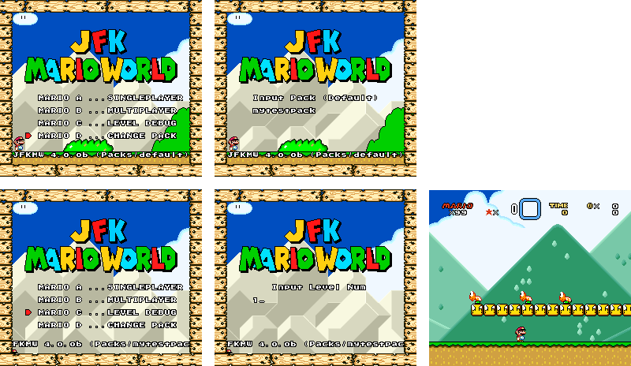
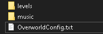

RaspcallionJFKMW Modpack-related documentation
Modpack creation tutorial
To create a new modpack, you just have to create a folder in the Packs folder of the game, and name it whatever you want.

For reference, i'll be creating a new pack with the name "mytestpack". Once we go in the folder, we have to create a "levels" folder. You will also need to put these files/folders in the folder:
"music" - Copy it from any other pack. Used for music.
"lua" (optional) - Used for objects (enemies, etc). See other packs for reference, By default, all sprites from the default pack are loaded.
"graphics" - Copy it from any other pack. Used for global graphics.
"title.png" - Feel free to reuse one, or make your own. Has to be 256x224. Used for the titlescreen (and it's border)
"global.jfkmap16" (optional) - See map16 reference. Used for tile definitions. By default, the global map16 file from the default pack is loaded.

(Note: The music folder has to have the music files in it, you can copypaste the ones from the Default pack if you want to.)
When you're done creating a new pack, you can use Solar Energy to make a new level for it, like so. You have to specify that you want this level to be in the pack.

For reference, I'll be creating level 1, sized 256x32, using the grass template (1). I'll just create a basic level, then save it.

Once you are done with that, you can test the pack out in the game by doing these steps:

If it worked, then great. You just made your own JFKMW modpack. Feel free to make your own things.
RaspcallionJFKMW Overworld/Config Format
Overworlds are a very unfinished feature, and not 100% stable. However, you can still create them. I suggest using a configuration file with forced_level for a modpack though. See below.
Right now, there is no current way to edit overworlds yet, and it's still being worked on, however, you can do some very basic configuration of the overworld/game using the file OverworldConfig.txt

OverworldConfig.txt reference:
//JFKMW Overworld Config, all values must be in hex.
//These values determine your starting position in the overworld.
start_x = A0
start_y = 240
//This determines the default level that the game will start on. If this is higher than 0, or added to the config file, then the game will be forced to go to that level on start, and also removes the Overworld.
forced_level = C0
The game uses the following files for the overworld:
- OW_GFX00.bin to OW_GFX07.bin - Main graphics (Some can be omitted, mostly for Layer 2)
- OW_GFX08.bin - Animated graphics page
- Map0.mw3 to Map6.mw3 - Map palettes (Can be dumped using Lunar Magic.)
- MainOW_Levels.bin - Layer 1 parameters (level ids, etc) (Can view/edit on hex editors by setting bytes per row to 32 bytes.)
- MainOW_L1.bin - Layer 1 tiles (paths, tiles) (Can view/edit on hex editors by setting bytes per row to 32 bytes.)
- MainOW_L2.bin - Layer 2 (decoration) tiles (Can be dumped by dumping $7F4000 using an emulator on the original game, exactly 16384 bytes.)
Overworlds use music tracks F0-F6 for all of the maps/submaps.
RaspcallionJFKMW Level Format
Advice
This probably won't be helpful to the normal user. It's more helpful for tool creators who want to make level editors for the game, or make their levels more advanced/have custom code/music/etc. Solar energy is the only current working level editor.
For Starters
Level folders are made of the following:
level_data.txt
level_palette.mw3
level_lua.lua (optional, see Lua Documentation)
Special Files
You can replace the games sprites on your own by using Per-Level sprites. If you make a sprite{SLOT}.lua file in the level folder, you can use that to replace a sprite.
For example, sprite0B.lua in level 02 would replace Sprite 0B from Code/Sprites if that level was loaded, replacing that sprite.
You can have per-level backgrounds (which are sent through net), this is extremely limited and you can only use slots F0 to FF, name them Background{F0-FF}.png. They will use their respective slots.
You can have per-level custom sounds, this is pretty limited though (also only .ogg files. no other format), and you can only use E0 to FF, name them sound{E0-FF}.ogg. These affect all slots. (1DF9/1DFC/1DFA). It also has it's own dedicated port, 1DFD.
You can also have per-level music, if you want to include .ogg/.spc/.mid music in your stage, you can include it by naming it music{TRACK}.format, for example musicD1.spc, music34.ogg, etc. Note: There's some unusual behaviour, if you have a sublevel on your level that uses the same song as the main level, but doesn't use the same file, this won't work. (music will just stay the same) Make sure they're named differently. like musicC0.ogg (for the main level) and musicC1.ogg (for the sublevel)
You can also use per-level GFX too. The following files are valid and detected by the game:
gfx_1.bin
gfx_2.bin
gfx_3.bin
gfx_4.bin
gfx_5.bin
gfx_6.bin
gfx_7.bin
gfx_8.bin
sp_1.bin
sp_2.bin
sp_3.bin
sp_4.bin
sp_5.bin
sp_6.bin
sp_7.bin
sp_8.bin
Note: It is recommended to use these if you are making a custom level that will use custom gfx, sprites, music, etc and you want to distribute it later, that will make your stages more drag and drop to install.
Example Level Folder Structure
60/
- level_data.txt
- level_lua.lua
- level_palette.mw3
- sprite04.lua
- spriteC9.lua
- sp_3.bin
- musicD0.ogg
- soundE5.ogg
- soundF1.ogg
- soundF2.ogg
Sample level_data.txt
//Author : idk
//time date
[level_config]
music = 1
size_x = 256
size_y = 64
background = 0
vertical = 0
time_limit = 300
gfx_1 = 0
gfx_2 = 1
gfx_3 = 3
gfx_4 = 3
gfx_5 = 5
gfx_6 = 6
gfx_7 = 0
gfx_8 = 1
sp_1 = 5
sp_2 = 6
sp_3 = 19
sp_4 = 20
sp_5 = 0
sp_6 = 0
sp_7 = 0
sp_8 = 0
start_x = 1
start_y = 1
//GFX_7 and GFX_8 are optional
[scripts]
level_lua.lua = main
[sprite_data]
[level_data]
100,0,0,255,0
//This should be a flat level. The format for tiles are..
//Map16Tile,StartX,StartY,EndX,EndY
//Sprites:
//sprite,positionx,positiony,direction
Map16 Format
16 bytes per row (set this on HXD)
REP TILE01 TILE02 TILE03 TILE04 PAL1,2 PAL3,4 FLIP COLLISION ACTAS
REP (2 bytes, 00-01) - tile to replace on the map16
TILE01, TILE02, TILE03, TILE04 (8 bytes, 02-09) - GFX tiles
PAL1,2 - PAL3,4 (2 bytes, 4 bit) - index of every palette, example : 4032 would mean tile 1 uses palette 4, tile 2 uses palette 0, you get it
FLIP (1 byte) - Flip Bits
YXYXYXYX
The first 2 bits are for TILE01, The second are for TILE02, and so on.
COLLISION (1 byte) - Collision bytes
TBRLHD--
T = Solid On Top
B = Solid On Bottom
R = Solid On Right
L = Solid On Left
H = Hurt player on touch
D = Kill player on touch
ACTAS (2 bytes) - obvious.
ingame 16x16 block
TILE1 TILE2
TILE3 TILE4